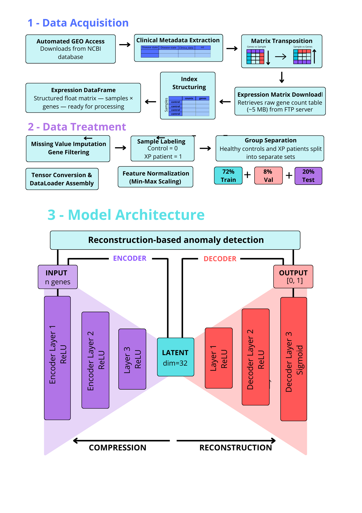
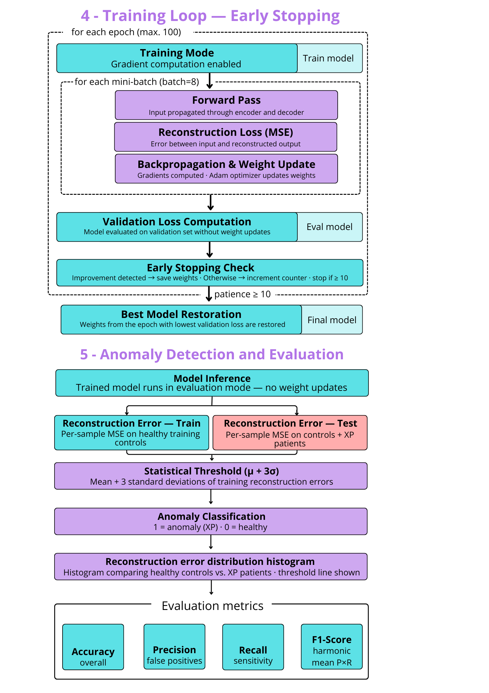

EXTENDED ABSTRACT
INTRODUCTION
Xeroderma Pigmentosum (XP) is a rare autosomal recessive genodermatosis caused by defects in the nucleotide excision repair (NER) pathway, leading to extreme ultraviolet hypersensitivity. Clinical manifestations include progressive cutaneous, ocular, and neurological deterioration, along with a more than 10,000-fold increased risk of early skin cancers. Although genes such as XPA through XPG and XPV are known to be involved, molecular diagnosis remains challenging due to extensive clinical and genetic heterogeneity. RNA-seq transcriptomic data combined with artificial intelligence offer a promising avenue for identifying robust molecular biomarkers. Among AI approaches, autoencoders excel at unsupervised dimensionality reduction and can learn latent representations capable of flagging anomalous expression patterns.
OBJECTIVES
To develop and validate autoencoder-based computational models that identify transcriptomic signatures associated with XP, detect aberrant gene expression patterns, and evaluate their utility as an auxiliary molecular diagnostic tool.
METHODOLOGY
Public RNA-seq data from fibroblasts of healthy donors and patients with different XP subtypes were obtained from the Gene Expression Omnibus (GEO). After quality control, genes with zero variance were removed and expression values were normalized to the [0,1] interval. The training set consisted of a fraction of the control samples exclusively, while the remaining control samples and all XP samples formed the test set.
A deep autoencoder was implemented in PyTorch. The encoder comprised three dense layers that compressed the input into a 32-neuron latent space, followed by a symmetric decoder. ReLU activation was used in the intermediate layers and sigmoid in the output. Training employed mean squared error (MSE) loss, the Adam optimizer, and early stopping to prevent overfitting.
Anomaly detection relied on the reconstruction error of each sample: any test sample whose error exceeded a statistically defined threshold was flagged as having a pathological profile. Biological relevance of individual genes was estimated by comparing the mean per-gene reconstruction error between groups. Explainable Artificial Intelligence (XAI) techniques were later applied to interpret the latent features driving the classification.
EXPECTED RESULTS
We anticipate identifying a robust transcriptomic signature for XP, enriched in genes related to DNA repair, oxidative stress, and cell-cycle control. The latent representation learned by the autoencoder should yield a consistent separation between control and patient samples, enabling high-sensitivity detection of aberrant profiles. Furthermore, the model may function as a classifier by using both reconstruction error and latent vectors as discriminative descriptors. The XAI-guided interpretation is expected to pinpoint candidate genes as relevant biomarkers for early XP diagnosis, contributing to future translational applications in precision medicine and omics sciences.
FUTURE PERSPECTIVES
We plan to refine the autoencoder architecture by exploring denoising and variational autoencoders (VAEs) to increase the robustness of anomaly detection. Independent cohort validation and integration of multi-omics data (e.g., proteomics, methylation) are also planned to enhance biological interpretability. Ultimately, the optimized model and the list of biomarker genes will be made publicly available on our research group’s website, enabling the scientific community to reproduce and apply the tool for Xeroderma Pigmentosum molecular diagnosis.
FIGURES


REFERENCES
ABNT:
CARDOSO, José Fernandes da Silva; MARTINS, Mariana Paiva Braga; FARIA, Ivan Aurélio Fortuna Kalil de; LOBO, Daniel Mendes Lira; FERREIRA, Tainan Gomes et al. Inteligência artificial no diagnóstico precoce de doenças crônicas: desafios e perspectivas. Revista Ibero-Americana de Humanidades, Ciências e Educação, v. 10, n. 12, p. 2451–2461, 2024. DOI: 10.51891/rease.v10i12.17626.
OLIVEIRA, Ana Helena Sales. Os genes do xeroderma pigmentoso e a sensibilidade ao sol. Genética na Escola, v. 16, n. 1, p. 28–37, 2021. DOI: 10.55838/1980-3540.ge.2021.366.
PASSOS, Matheus Jacobina Brito; BRITO, Vanessa Araújo Jacobina; ALMEIDA NETO, Alcides Duarte de. Xeroderma pigmentoso: uma patologia rara. Brazilian Journal of Implantology and Health Sciences, v. 6, n. 9, p. 2349–2353, 2024. DOI: 10.36557/2674-8169.2024v6n9p2349-2353.
TAMA SÁNCHEZ, Francisco A.; VASQUEZ FALCONÍ, Joselyn A.; AGUILAR MEJÍA, Rommel M.; RODRÍGUEZ PÉREZ, Juan Carlos A.; LÓPEZ SOLÓRZANO, Anthony A.; PAREDES JERÉZ, Kevin D. Xeroderma pigmentoso: reporte de caso y revisión de la literatura. Revista Científica de Salud y Desarrollo Humano, v. 5, n. 2, p. 44–55, 2024. DOI: 10.61368/r.s.d.h.v5i2.117.
ZGHAL, M.; MESSAOUD, O.; MOKNI, M. Xeroderma pigmentoso. EMC - Dermatología, v. 55, n. 2, p. 1–21, 2021. DOI: 10.1016/S1761-2896(21)45140-X.
Vancouver:
1. Cardoso JFS, Martins MPB, Faria IAFK, Lobo DML, Ferreira TG, et al. Inteligência artificial no diagnóstico precoce de doenças crônicas: desafios e perspectivas. Rev Ibero-Am Humanid Cienc Educ. 2024;10(12):2451–2461. doi:10.51891/rease.v10i12.17626.
2. Oliveira AHS. Os genes do xeroderma pigmentoso e a sensibilidade ao sol. Genet Esc. 2021;16(1):28–37. doi:10.55838/1980-3540.ge.2021.366.
3. Passos MJB, Brito VAJ, Almeida Neto AD. Xeroderma pigmentoso: uma patologia rara. Braz J Implantol Health Sci. 2024;6(9):2349–2353. doi:10.36557/2674-8169.2024v6n9p2349-2353.
4. Tama Sánchez FA, Vasquez Falconí JA, Aguilar Mejía RM, Rodríguez Pérez JCA, López Solórzano AA, Paredes Jeréz KD. Xeroderma pigmentoso: reporte de caso y revisión de la literatura. Rev Cient Salud Desarro Humano. 2024;5(2):44–55. doi:10.61368/r.s.d.h.v5i2.117.
5. Zghal M, Messaoud O, Mokni M. Xeroderma pigmentoso. EMC Dermatol. 2021;55(2):1–21. doi:10.1016/S1761-2896(21)45140-X.